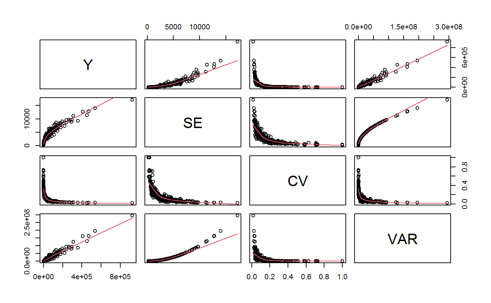
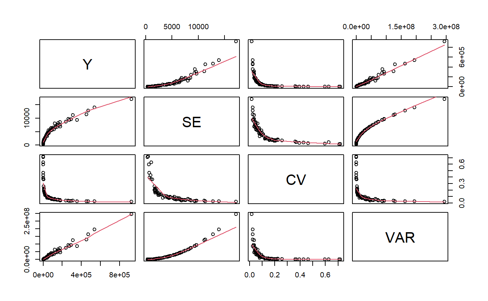
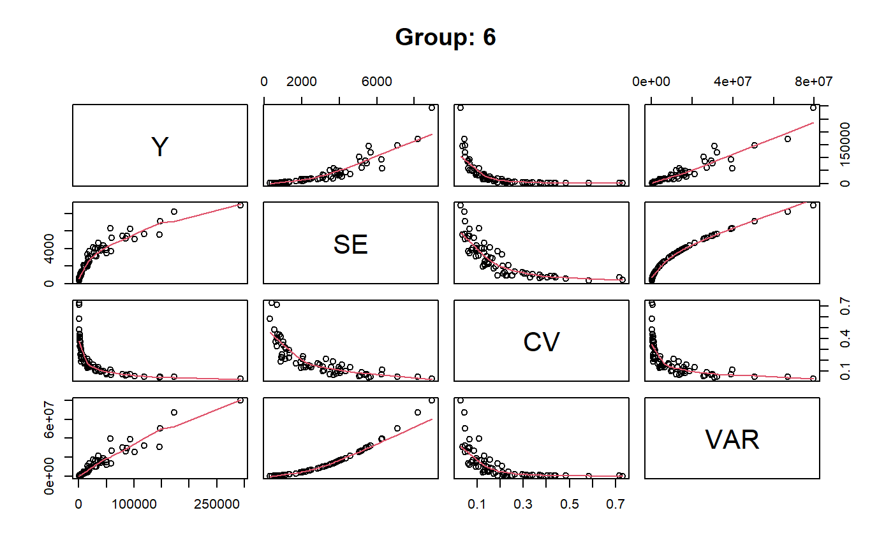
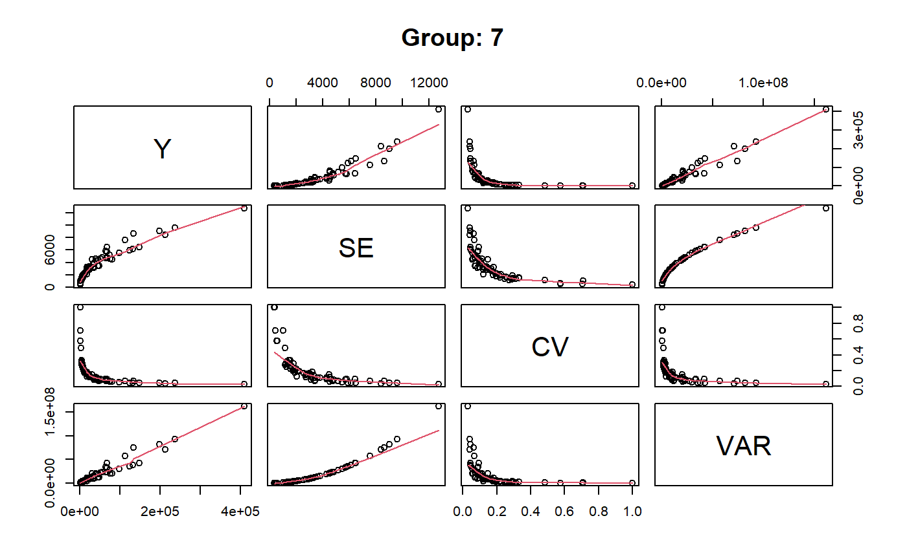
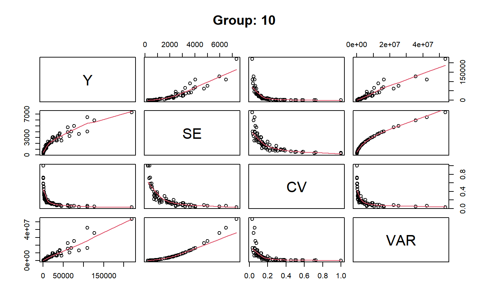

svystat.RdComputes many estimates and errors (e.g. for disparate estimation domains) in just a single shot, primarily to use them in fitting GVF models. Can handle estimators of all kinds.
svystat(design, kind = c("TM", "R", "S", "SR", "B", "Q", "L", "Sigma", "Sigma2"), by = NULL, group = NULL, forGVF = TRUE, combo = -1, ...) # S3 method for gvf.input.gr plot(x, ...) # S3 method for svystat.gr coef(object, ...) # S3 method for svystat.gr SE(object, ...) # S3 method for svystat.gr VAR(object, ...) # S3 method for svystat.gr cv(object, ...) # S3 method for svystat.gr deff(object, ...) # S3 method for svystat.gr confint(object, ...)
| design | Object of class |
|---|---|
| kind |
|
| by | Formula specifying the variables that define the "estimation domains". If |
| group | Formula specifying a partition of the population into "groups": the output will be returned separately for each group.
If |
| forGVF | Select |
| combo | An |
| ... | For function |
| x | The object of class |
| object | An object of class |
This function can compute all the summary statistics provided by ReGenesees, and is principally meant to return a lot of them in just a single shot.
If forGVF = TRUE the output will be ready to feed ReGenesees GVF fitting infrastructure, otherwise it will consist simply of a set of summary statistic objects.
Use argument kind to specify the summary statistic you need. The default value 'TM' selects function svystatTM, which yields Totals and Means. All the arguments needed by the summary statistic function implied by kind (e.g. argument y for svystatTM when kind = 'TM') will be passed on through argument ‘...’.
As usual in summary statistics, argument by can be used to request domain estimates.
The group formula (if any) specifies a way of partitioning the population into groups: the output will be reported separately for each group. In the GVF context, a “grouped” output will permit to fit separate GVF models inside different groups (and hence to compute separate variance predictions for different groups).
Note that group and by share identical syntax and semantics as model formulae, despite they have different purposes in function svystat (as explained above).
Parameter combo is only meaningful if by is passed. Its purpose is to allow computing estimates and errors simultaneously for many estimation domains.
If the by formula involves n variables, specifying combo = m requests to compute outputs for all the domains determined by all the interactions of by variables up to order m (with -1 <= m <= n), as follows:
COMBO MEANING
m = -1.......'no combo', i.e. treat 'by' formula as usual (the default);
m = 0.......'order zero' combination, i.e. just a single domain:
the whole population;
m = 1.......'order zero' plus 'order one' combinations, the latter being
all the marginal domains defined by 'by' variables;
m = n........combinations of any order, the maximum being the one with
all 'by' variables interacting simultaneously.
The plot method can be used only when forGVF = TRUE and produces a matrix (or many matrices, if group is passed) of scatterplots with polynomial smoothers.
Methods coef, SE, VAR, cv, deff, and confint can be used only when forGVF = FALSE, to extract estimates and variability statistics.
An object storing estimates and errors, whose detailed structure depends on input parameters' values.
If forGVF = FALSE, a set of summary statistics possibly stored into a list (with class svystat.gr in the most general case).
If forGVF = TRUE and argument group is not passed, an object of class gvf.input.
If forGVF = TRUE and argument group is passed, an object of class gvf.input.gr. This is a list of objects of class gvf.input, each one pertaining to a different population group.
estimator.kind to assess what kind of estimates are stored inside a survey statistic object, gvf.input as an alternative to prepare the input for GVF model fitting, GVF.db to manage ReGenesees archive of registered GVF models, fit.gvf to fit GVF models, plot.gvf.fit to get diagnostic plots for fitted GVF models, drop.gvf.points to drop alleged outliers from a fitted GVF model and simultaneously refit it, and predictCV to predict CV values via fitted GVF models.
# Load sbs data: data(sbs) # Create a design object: sbsdes<-e.svydesign(data=sbs,ids=~id,strata=~strata,weights=~weight,fpc=~fpc) ########################################################################## # svystat as an alternative way to compute 'ordinary' summary statistics # ########################################################################## ## Total number of employees svystat(sbsdes,y=~emp.num,forGVF=FALSE)#> Total SE #> emp.num 985157.9 1421.315#> Total SE #> emp.num 985157.9 1421.315## Average number of employees per enterprise svystat(sbsdes,y=~emp.num,estimator="Mean",forGVF=FALSE)#> Mean SE #> emp.num 56.88635 0.08207154#> Mean SE #> emp.num 56.88635 0.08207154## Average value added per employee by economic activity macro-sector ## (nace.macro): svystat(sbsdes,kind="R",num=~va.imp2,den=~emp.num,by=~nace.macro,forGVF=FALSE)#> nace.macro va.imp2/emp.num SE.va.imp2/emp.num #> Agriculture Agriculture 58.59297 3.2226705 #> Industry Industry 47.93647 0.6580034 #> Commerce Commerce 226.99062 12.9021106 #> Services Services 36.89123 0.5767339#> nace.macro va.imp2/emp.num SE.va.imp2/emp.num #> Agriculture Agriculture 58.59297 3.2226705 #> Industry Industry 47.93647 0.6580034 #> Commerce Commerce 226.99062 12.9021106 #> Services Services 36.89123 0.5767339## Counts of employees by classes of number of employees (emp.cl) crossed ## with economic activity macro-sector (nace.macro): svystat(sbsdes,y=~emp.num,by=~emp.cl:nace.macro,forGVF=FALSE)#> emp.cl nace.macro Total.emp.num SE.Total.emp.num #> [6,9].Agriculture [6,9] Agriculture 731.3167 9.281259 #> (9,19].Agriculture (9,19] Agriculture 2624.4359 44.575649 #> (19,49].Agriculture (19,49] Agriculture 2922.5615 68.861432 #> (49,99].Agriculture (49,99] Agriculture 1999.6154 47.694076 #> (99,Inf].Agriculture (99,Inf] Agriculture 8761.0000 0.000000 #> [6,9].Industry [6,9] Industry 15427.1899 104.285002 #> (9,19].Industry (9,19] Industry 31917.7212 243.654881 #> (19,49].Industry (19,49] Industry 69637.7435 749.906901 #> (49,99].Industry (49,99] Industry 84114.6819 785.184314 #> (99,Inf].Industry (99,Inf] Industry 380357.0000 0.000000 #> [6,9].Commerce [6,9] Commerce 9909.9941 131.532367 #> (9,19].Commerce (9,19] Commerce 12319.5145 213.766128 #> (19,49].Commerce (19,49] Commerce 13644.2736 488.404994 #> (49,99].Commerce (49,99] Commerce 8177.2696 248.297022 #> (99,Inf].Commerce (99,Inf] Commerce 25166.0000 0.000000 #> [6,9].Services [6,9] Services 11994.3642 88.687559 #> (9,19].Services (9,19] Services 15626.5388 165.977429 #> (19,49].Services (19,49] Services 21886.4967 379.537665 #> (49,99].Services (49,99] Services 23109.1340 468.271619 #> (99,Inf].Services (99,Inf] Services 244831.0000 0.000000#> emp.cl nace.macro Total.emp.num SE.Total.emp.num #> [6,9].Agriculture [6,9] Agriculture 731.3167 9.281259 #> (9,19].Agriculture (9,19] Agriculture 2624.4359 44.575649 #> (19,49].Agriculture (19,49] Agriculture 2922.5615 68.861432 #> (49,99].Agriculture (49,99] Agriculture 1999.6154 47.694076 #> (99,Inf].Agriculture (99,Inf] Agriculture 8761.0000 0.000000 #> [6,9].Industry [6,9] Industry 15427.1899 104.285002 #> (9,19].Industry (9,19] Industry 31917.7212 243.654881 #> (19,49].Industry (19,49] Industry 69637.7435 749.906901 #> (49,99].Industry (49,99] Industry 84114.6819 785.184314 #> (99,Inf].Industry (99,Inf] Industry 380357.0000 0.000000 #> [6,9].Commerce [6,9] Commerce 9909.9941 131.532367 #> (9,19].Commerce (9,19] Commerce 12319.5145 213.766128 #> (19,49].Commerce (19,49] Commerce 13644.2736 488.404994 #> (49,99].Commerce (49,99] Commerce 8177.2696 248.297022 #> (99,Inf].Commerce (99,Inf] Commerce 25166.0000 0.000000 #> [6,9].Services [6,9] Services 11994.3642 88.687559 #> (9,19].Services (9,19] Services 15626.5388 165.977429 #> (19,49].Services (19,49] Services 21886.4967 379.537665 #> (49,99].Services (49,99] Services 23109.1340 468.271619 #> (99,Inf].Services (99,Inf] Services 244831.0000 0.000000## Provided forGVF = FALSE, you can use estimator.kind on svystat output: stat<-svystat(sbsdes,kind="R",num=~va.imp2,den=~emp.num,by=~emp.cl:nace.macro, group=~region,forGVF=FALSE) stat#> $North #> region emp.cl nace.macro va.imp2/emp.num #> North.[6,9].Agriculture North [6,9] Agriculture 366.96371 #> North.(9,19].Agriculture North (9,19] Agriculture 125.14796 #> North.(19,49].Agriculture North (19,49] Agriculture 26.38628 #> North.(49,99].Agriculture North (49,99] Agriculture 40.69757 #> North.(99,Inf].Agriculture North (99,Inf] Agriculture 40.78901 #> North.[6,9].Industry North [6,9] Industry 149.44154 #> North.(9,19].Industry North (9,19] Industry 93.67811 #> North.(19,49].Industry North (19,49] Industry 71.30895 #> North.(49,99].Industry North (49,99] Industry 54.98881 #> North.(99,Inf].Industry North (99,Inf] Industry 42.17408 #> North.[6,9].Commerce North [6,9] Commerce 284.44988 #> North.(9,19].Commerce North (9,19] Commerce 285.75077 #> North.(19,49].Commerce North (19,49] Commerce 343.19045 #> North.(49,99].Commerce North (49,99] Commerce 277.32682 #> North.(99,Inf].Commerce North (99,Inf] Commerce 119.01810 #> North.[6,9].Services North [6,9] Services 114.79726 #> North.(9,19].Services North (9,19] Services 108.58072 #> North.(19,49].Services North (19,49] Services 81.84604 #> North.(49,99].Services North (49,99] Services 49.24988 #> North.(99,Inf].Services North (99,Inf] Services 23.62823 #> SE.va.imp2/emp.num #> North.[6,9].Agriculture 69.399164 #> North.(9,19].Agriculture 23.521324 #> North.(19,49].Agriculture 7.379092 #> North.(49,99].Agriculture 6.878927 #> North.(99,Inf].Agriculture 0.000000 #> North.[6,9].Industry 10.542207 #> North.(9,19].Industry 6.876373 #> North.(19,49].Industry 4.276559 #> North.(49,99].Industry 4.406634 #> North.(99,Inf].Industry 0.000000 #> North.[6,9].Commerce 53.520240 #> North.(9,19].Commerce 33.649105 #> North.(19,49].Commerce 65.511219 #> North.(49,99].Commerce 41.975198 #> North.(99,Inf].Commerce 0.000000 #> North.[6,9].Services 12.025794 #> North.(9,19].Services 7.641878 #> North.(19,49].Services 5.870567 #> North.(49,99].Services 3.834554 #> North.(99,Inf].Services 0.000000 #> #> $Center #> region emp.cl nace.macro va.imp2/emp.num #> Center.[6,9].Agriculture Center [6,9] Agriculture 255.17000 #> Center.(9,19].Agriculture Center (9,19] Agriculture 77.44690 #> Center.(19,49].Agriculture Center (19,49] Agriculture 54.65256 #> Center.(49,99].Agriculture Center (49,99] Agriculture 28.89706 #> Center.(99,Inf].Agriculture Center (99,Inf] Agriculture 71.19741 #> Center.[6,9].Industry Center [6,9] Industry 59.87445 #> Center.(9,19].Industry Center (9,19] Industry 34.18783 #> Center.(19,49].Industry Center (19,49] Industry 65.88804 #> Center.(49,99].Industry Center (49,99] Industry 26.98472 #> Center.(99,Inf].Industry Center (99,Inf] Industry 29.40858 #> Center.[6,9].Commerce Center [6,9] Commerce 250.78978 #> Center.(9,19].Commerce Center (9,19] Commerce 352.27161 #> Center.(19,49].Commerce Center (19,49] Commerce 177.15472 #> Center.(49,99].Commerce Center (49,99] Commerce 209.69909 #> Center.(99,Inf].Commerce Center (99,Inf] Commerce 75.61189 #> Center.[6,9].Services Center [6,9] Services 225.47039 #> Center.(9,19].Services Center (9,19] Services 72.56336 #> Center.(19,49].Services Center (19,49] Services 81.61965 #> Center.(49,99].Services Center (49,99] Services 32.95646 #> Center.(99,Inf].Services Center (99,Inf] Services 27.64846 #> SE.va.imp2/emp.num #> Center.[6,9].Agriculture 134.721936 #> Center.(9,19].Agriculture 35.177421 #> Center.(19,49].Agriculture 12.999974 #> Center.(49,99].Agriculture 10.348290 #> Center.(99,Inf].Agriculture 0.000000 #> Center.[6,9].Industry 11.869080 #> Center.(9,19].Industry 4.301401 #> Center.(19,49].Industry 9.918660 #> Center.(49,99].Industry 2.081170 #> Center.(99,Inf].Industry 0.000000 #> Center.[6,9].Commerce 37.069887 #> Center.(9,19].Commerce 87.846914 #> Center.(19,49].Commerce 28.297146 #> Center.(49,99].Commerce 55.335978 #> Center.(99,Inf].Commerce 0.000000 #> Center.[6,9].Services 19.646717 #> Center.(9,19].Services 10.978079 #> Center.(19,49].Services 9.053992 #> Center.(49,99].Services 2.193392 #> Center.(99,Inf].Services 0.000000 #> #> $South #> region emp.cl nace.macro va.imp2/emp.num #> South.[6,9].Agriculture South [6,9] Agriculture 184.591520 #> South.(9,19].Agriculture South (9,19] Agriculture 40.105422 #> South.(19,49].Agriculture South (19,49] Agriculture 34.953927 #> South.(99,Inf].Agriculture South (99,Inf] Agriculture 2.538631 #> South.[6,9].Industry South [6,9] Industry 114.786806 #> South.(9,19].Industry South (9,19] Industry 87.405151 #> South.(19,49].Industry South (19,49] Industry 51.414112 #> South.(49,99].Industry South (49,99] Industry 57.637797 #> South.(99,Inf].Industry South (99,Inf] Industry 45.439600 #> South.[6,9].Commerce South [6,9] Commerce 469.637600 #> South.(9,19].Commerce South (9,19] Commerce 218.753010 #> South.(19,49].Commerce South (19,49] Commerce 237.570888 #> South.(49,99].Commerce South (49,99] Commerce 65.432565 #> South.(99,Inf].Commerce South (99,Inf] Commerce 159.420290 #> South.[6,9].Services South [6,9] Services 58.804592 #> South.(9,19].Services South (9,19] Services 106.823712 #> South.(19,49].Services South (19,49] Services 59.160541 #> South.(49,99].Services South (49,99] Services 47.408801 #> South.(99,Inf].Services South (99,Inf] Services 22.027478 #> SE.va.imp2/emp.num #> South.[6,9].Agriculture 40.8041969 #> South.(9,19].Agriculture 9.9078878 #> South.(19,49].Agriculture 8.3784352 #> South.(99,Inf].Agriculture 0.0000000 #> South.[6,9].Industry 13.6388730 #> South.(9,19].Industry 13.1573725 #> South.(19,49].Industry 4.8598330 #> South.(49,99].Industry 4.3907101 #> South.(99,Inf].Industry 0.0000000 #> South.[6,9].Commerce 157.2612126 #> South.(9,19].Commerce 42.4770659 #> South.(19,49].Commerce 39.7773417 #> South.(49,99].Commerce 31.5943961 #> South.(99,Inf].Commerce 0.0000000 #> South.[6,9].Services 9.6455143 #> South.(9,19].Services 15.6861187 #> South.(19,49].Services 4.1040128 #> South.(49,99].Services 0.9976743 #> South.(99,Inf].Services 0.0000000 #> #> attr(,"group.vars") #> [1] "region" #> attr(,"class") #> [1] "svystat.gr" "list"#> [1] "Ratio"########################################################## # Understanding syntax and semantics of argument 'combo' # ########################################################## # Load household data: data(data.examples) # Create a design object: houdes<-e.svydesign(data=example,ids=~towcod+famcod,strata=~SUPERSTRATUM, weights=~weight) # Add convenience variable 'ones' to estimate counts: houdes<-des.addvars(houdes,ones=1) ## To facilitate understanding, let's for the moment keep forGVF = FALSE. ## Let's use estimates and errors of counts of individuals by sex and ## five age classes (age5c): svystat(houdes,y=~ones,by=~age5c:sex,forGVF=FALSE)#> age5c sex Total.ones SE.Total.ones #> 1.f 1 f 70394.0 5272.598 #> 2.f 2 f 147004.4 7237.907 #> 3.f 3 f 177780.1 7547.864 #> 4.f 4 f 65782.8 5235.777 #> 5.f 5 f 9099.5 2043.608 #> 1.m 1 m 58534.4 4475.785 #> 2.m 2 m 147570.7 6700.508 #> 3.m 3 m 178683.8 6829.000 #> 4.m 4 m 57114.8 5425.453 #> 5.m 5 m 12136.8 1970.159## Now let's play with argument 'combo': # combo = -1 # -> 'no combo', i.e. treat 'by' formula as usual svystat(houdes,y=~ones,by=~age5c:sex,forGVF=FALSE,combo=-1)#> age5c sex Total.ones SE.Total.ones #> 1.f 1 f 70394.0 5272.598 #> 2.f 2 f 147004.4 7237.907 #> 3.f 3 f 177780.1 7547.864 #> 4.f 4 f 65782.8 5235.777 #> 5.f 5 f 9099.5 2043.608 #> 1.m 1 m 58534.4 4475.785 #> 2.m 2 m 147570.7 6700.508 #> 3.m 3 m 178683.8 6829.000 #> 4.m 4 m 57114.8 5425.453 #> 5.m 5 m 12136.8 1970.159# combo = 0 # -> 'order zero' combination, i.e. just a single domain: the whole population svystat(houdes,y=~ones,by=~age5c:sex,forGVF=FALSE,combo=0)#> Total SE #> ones 924101.3 17172.68# combo = 1 # -> 'order zero' plus 'order one' combinations, the latter being all the # marginal domains defined by 'by' variables svystat(houdes,y=~ones,by=~age5c:sex,forGVF=FALSE,combo=1)#> $population #> Total SE #> ones 924101.3 17172.68 #> #> $age5c #> age5c Total.ones SE.Total.ones #> 1 1 128928.4 6855.457 #> 2 2 294575.1 9646.795 #> 3 3 356463.9 9354.653 #> 4 4 122897.6 8022.848 #> 5 5 21236.3 2728.266 #> #> $sex #> sex Total.ones SE.Total.ones #> f f 470060.8 12796.39 #> m m 454040.5 11359.58 #> #> attr(,"class") #> [1] "svystat.gr" "list"# combo = 2 # -> since 'by' has 2 variables, this means combinations of any order up to # the maximum svystat(houdes,y=~ones,by=~age5c:sex,forGVF=FALSE,combo=2)#> $population #> Total SE #> ones 924101.3 17172.68 #> #> $age5c #> age5c Total.ones SE.Total.ones #> 1 1 128928.4 6855.457 #> 2 2 294575.1 9646.795 #> 3 3 356463.9 9354.653 #> 4 4 122897.6 8022.848 #> 5 5 21236.3 2728.266 #> #> $sex #> sex Total.ones SE.Total.ones #> f f 470060.8 12796.39 #> m m 454040.5 11359.58 #> #> $`age5c:sex` #> age5c sex Total.ones SE.Total.ones #> 1.f 1 f 70394.0 5272.598 #> 2.f 2 f 147004.4 7237.907 #> 3.f 3 f 177780.1 7547.864 #> 4.f 4 f 65782.8 5235.777 #> 5.f 5 f 9099.5 2043.608 #> 1.m 1 m 58534.4 4475.785 #> 2.m 2 m 147570.7 6700.508 #> 3.m 3 m 178683.8 6829.000 #> 4.m 4 m 57114.8 5425.453 #> 5.m 5 m 12136.8 1970.159 #> #> attr(,"class") #> [1] "svystat.gr" "list"# combo = 3 # -> yields an error, as 'combo' cannot exceed the number of 'by' variables # (2 in this example) if (FALSE) { svystat(houdes,y=~ones,by=~age5c:sex,forGVF=FALSE,combo=3) } ###################################################################### # svystat as an alternative way to prepare input data for GVF models # ###################################################################### ## The same estimates and errors of the last example above, now with ## forGVF = TRUE: note the different output data format svystat(houdes,y=~ones,by=~age5c:sex,combo=2)#> name Y SE CV VAR #> 1 ones 924101.3 17172.681 0.01858312 294900983 #> 2 1:ones 128928.4 6855.457 0.05317259 46997295 #> 3 2:ones 294575.1 9646.795 0.03274817 93060661 #> 4 3:ones 356463.9 9354.653 0.02624292 87509530 #> 5 4:ones 122897.6 8022.848 0.06528075 64366083 #> 6 5:ones 21236.3 2728.266 0.12847181 7443435 #> 7 f:ones 470060.8 12796.386 0.02722283 163747492 #> 8 m:ones 454040.5 11359.582 0.02501887 129040102 #> 9 1.f:ones 70394.0 5272.598 0.07490124 27800288 #> 10 2.f:ones 147004.4 7237.907 0.04923599 52387294 #> 11 3.f:ones 177780.1 7547.864 0.04245618 56970252 #> 12 4.f:ones 65782.8 5235.777 0.07959188 27413358 #> 13 5.f:ones 9099.5 2043.608 0.22458468 4176335 #> 14 1.m:ones 58534.4 4475.785 0.07646418 20032649 #> 15 2.m:ones 147570.7 6700.508 0.04540541 44896804 #> 16 3.m:ones 178683.8 6829.000 0.03821835 46635241 #> 17 4.m:ones 57114.8 5425.453 0.09499207 29435544 #> 18 5.m:ones 12136.8 1970.159 0.16232937 3881527## Note that the agile command above is indeed equivalent to the following ## lengthier, cumbersome statement: gvf.input(houdes, svystatTM(houdes,y=~ones), svystatTM(houdes,y=~ones,by=~age5c), svystatTM(houdes,y=~ones,by=~sex), svystatTM(houdes,y=~ones,by=~age5c:sex) )#> name Y SE CV VAR #> 1 ones 924101.3 17172.681 0.01858312 294900983 #> 2 1:ones 128928.4 6855.457 0.05317259 46997295 #> 3 2:ones 294575.1 9646.795 0.03274817 93060661 #> 4 3:ones 356463.9 9354.653 0.02624292 87509530 #> 5 4:ones 122897.6 8022.848 0.06528075 64366083 #> 6 5:ones 21236.3 2728.266 0.12847181 7443435 #> 7 f:ones 470060.8 12796.386 0.02722283 163747492 #> 8 m:ones 454040.5 11359.582 0.02501887 129040102 #> 9 1.f:ones 70394.0 5272.598 0.07490124 27800288 #> 10 2.f:ones 147004.4 7237.907 0.04923599 52387294 #> 11 3.f:ones 177780.1 7547.864 0.04245618 56970252 #> 12 4.f:ones 65782.8 5235.777 0.07959188 27413358 #> 13 5.f:ones 9099.5 2043.608 0.22458468 4176335 #> 14 1.m:ones 58534.4 4475.785 0.07646418 20032649 #> 15 2.m:ones 147570.7 6700.508 0.04540541 44896804 #> 16 3.m:ones 178683.8 6829.000 0.03821835 46635241 #> 17 4.m:ones 57114.8 5425.453 0.09499207 29435544 #> 18 5.m:ones 12136.8 1970.159 0.16232937 3881527################################################ # Using argument 'group' to prepare input data # # for separate GVF models # ################################################ ## The same estimates and errors of the last example above, now prepared ## separately for different regions (regcod): svystat(houdes,y=~ones,by=~age5c:sex,combo=2,group=~regcod)#> $`6` #> name Y SE CV VAR #> 1 6:ones 293458.3 8923.8062 0.03040911 79634317.2 #> 2 6.1:ones 40903.4 4080.2341 0.09975293 16648310.2 #> 3 6.2:ones 93387.9 6248.6896 0.06691113 39046122.2 #> 4 6.3:ones 118888.1 5682.2007 0.04779453 32287404.5 #> 5 6.4:ones 34964.4 4605.3581 0.13171563 21209322.9 #> 6 6.5:ones 5314.5 1131.0289 0.21281943 1279226.3 #> 7 6.f:ones 147487.3 7115.8574 0.04824726 50635427.1 #> 8 6.m:ones 145971.0 5566.5674 0.03813475 30986672.6 #> 9 6.1.f:ones 22115.0 3131.3939 0.14159593 9805627.9 #> 10 6.2.f:ones 44476.2 4337.1112 0.09751533 18810533.4 #> 11 6.3.f:ones 59710.2 5198.9486 0.08706969 27029066.3 #> 12 6.4.f:ones 19465.0 3663.7726 0.18822361 13423230.0 #> 13 6.5.f:ones 1720.9 695.4733 0.40413348 483683.1 #> 14 6.1.m:ones 18788.4 2531.7660 0.13475155 6409839.0 #> 15 6.2.m:ones 48911.7 4059.2074 0.08299052 16477164.9 #> 16 6.3.m:ones 59177.9 3694.3741 0.06242827 13648400.3 #> 17 6.4.m:ones 15499.4 1970.9812 0.12716500 3884767.0 #> 18 6.5.m:ones 3593.6 1131.3951 0.31483612 1280054.8 #> #> $`7` #> name Y SE CV VAR #> 1 7:ones 410671.9 12714.366 0.03095991 161655092 #> 2 7.1:ones 55833.8 4814.445 0.08622815 23178885 #> 3 7.2:ones 131681.4 6148.902 0.04669529 37808992 #> 4 7.3:ones 148350.1 6489.953 0.04374754 42119485 #> 5 7.4:ones 63302.5 5796.072 0.09156150 33594447 #> 6 7.5:ones 11504.1 2216.158 0.19264069 4911355 #> 7 7.f:ones 212537.3 8415.166 0.03959383 70815025 #> 8 7.m:ones 198134.6 9038.617 0.04561857 81696591 #> 9 7.1.f:ones 31771.0 3604.749 0.11346036 12994216 #> 10 7.2.f:ones 66546.2 4784.696 0.07190036 22893313 #> 11 7.3.f:ones 74654.8 4559.773 0.06107809 20791527 #> 12 7.4.f:ones 33306.9 3255.533 0.09774349 10598493 #> 13 7.5.f:ones 6258.4 1834.256 0.29308703 3364495 #> 14 7.1.m:ones 24062.8 3107.262 0.12913135 9655076 #> 15 7.2.m:ones 65135.2 4724.222 0.07252947 22318271 #> 16 7.3.m:ones 73695.3 5181.339 0.07030759 26846270 #> 17 7.4.m:ones 29995.6 4500.199 0.15002863 20251789 #> 18 7.5.m:ones 5245.7 1294.904 0.24685051 1676776 #> #> $`10` #> name Y SE CV VAR #> 1 10:ones 219971.1 7321.9925 0.03328616 53611573.6 #> 2 10.1:ones 32191.2 2677.7042 0.08318125 7170100.0 #> 3 10.2:ones 69505.8 4025.6113 0.05791763 16205546.6 #> 4 10.3:ones 89225.7 3619.7569 0.04056855 13102640.3 #> 5 10.4:ones 24630.7 3092.2990 0.12554653 9562313.4 #> 6 10.5:ones 4417.7 1119.3094 0.25336928 1252853.6 #> 7 10.f:ones 110036.2 6503.6175 0.05910434 42297040.1 #> 8 10.m:ones 109934.9 4044.3589 0.03678867 16356838.9 #> 9 10.1.f:ones 16508.0 2236.1673 0.13545961 5000444.1 #> 10 10.2.f:ones 35982.0 3268.5544 0.09083860 10683447.6 #> 11 10.3.f:ones 43415.1 3024.8402 0.06967254 9149658.4 #> 12 10.4.f:ones 13010.9 1841.6391 0.14154587 3391634.7 #> 13 10.5.f:ones 1120.2 572.8502 0.51138207 328157.3 #> 14 10.1.m:ones 15683.2 1991.9172 0.12700961 3967734.0 #> 15 10.2.m:ones 33523.8 2470.0948 0.07368183 6101368.3 #> 16 10.3.m:ones 45810.6 2478.0174 0.05409266 6140570.4 #> 17 10.4.m:ones 11619.8 2301.9531 0.19810609 5298988.3 #> 18 10.5.m:ones 3297.5 961.6113 0.29161829 924696.3 #> #> attr(,"group.vars") #> [1] "regcod" #> attr(,"class") #> [1] "gvf.input.gr" "list"## Again the same estimates and errors, prepared separately for groups ## defined crossing marital status (marstat) and region: svystat(houdes,y=~ones,by=~age5c:sex,combo=2,group=~marstat:regcod)#> $married.6 #> name Y SE CV VAR #> 1 married.6:ones 173001.9 8183.3890 0.04730231 66967855.7 #> 2 married.6.1:ones 5967.7 1315.6942 0.22046922 1731051.1 #> 3 married.6.2:ones 57155.1 6302.4072 0.11026850 39720336.2 #> 4 married.6.3:ones 79175.5 5469.7271 0.06908358 29917914.3 #> 5 married.6.4:ones 26504.1 4136.7694 0.15608036 17112860.9 #> 6 married.6.5:ones 4199.5 944.2243 0.22484207 891559.4 #> 7 married.6.f:ones 87840.2 5409.9384 0.06158841 29267433.1 #> 8 married.6.m:ones 85161.7 5118.0128 0.06009759 26194054.6 #> 9 married.6.1.f:ones 4077.5 937.6069 0.22994651 879106.7 #> 10 married.6.2.f:ones 27145.1 3565.8442 0.13136235 12715244.5 #> 11 married.6.3.f:ones 39672.3 3781.5369 0.09531933 14300021.1 #> 12 married.6.4.f:ones 15802.5 3308.0005 0.20933400 10942867.2 #> 13 married.6.5.f:ones 1142.8 553.0390 0.48393336 305852.2 #> 14 married.6.1.m:ones 1890.2 823.5977 0.43571988 678313.2 #> 15 married.6.2.m:ones 30010.0 3966.9579 0.13218787 15736754.7 #> 16 married.6.3.m:ones 39503.2 3919.4184 0.09921775 15361840.8 #> 17 married.6.4.m:ones 10701.6 1943.2926 0.18158898 3776386.3 #> 18 married.6.5.m:ones 3056.7 1038.0655 0.33960332 1077579.9 #> #> $unmarried.6 #> name Y SE CV VAR #> 1 unmarried.6:ones 101776.7 5053.8683 0.04965644 25541584.6 #> 2 unmarried.6.1:ones 33965.7 4046.9080 0.11914690 16377464.6 #> 3 unmarried.6.2:ones 32410.4 3122.1231 0.09633090 9747652.6 #> 4 unmarried.6.3:ones 30093.6 3199.6627 0.10632369 10237841.3 #> 5 unmarried.6.4:ones 4728.9 896.3779 0.18955316 803493.4 #> 6 unmarried.6.5:ones 578.1 421.7000 0.72945865 177830.9 #> 7 unmarried.6.f:ones 50867.3 3495.6179 0.06872033 12219344.4 #> 8 unmarried.6.m:ones 50909.4 3830.8081 0.07524756 14675091.1 #> 9 unmarried.6.1.f:ones 17067.5 2873.2550 0.16834657 8255594.4 #> 10 unmarried.6.2.f:ones 15640.3 2373.0681 0.15172779 5631452.2 #> 11 unmarried.6.3.f:ones 15591.7 2101.6684 0.13479405 4417010.0 #> 12 unmarried.6.4.f:ones 1989.7 755.2217 0.37956562 570359.8 #> 13 unmarried.6.5.f:ones 578.1 421.7000 0.72945865 177830.9 #> 14 unmarried.6.1.m:ones 16898.2 2450.0347 0.14498791 6002670.0 #> 15 unmarried.6.2.m:ones 16770.1 2213.2098 0.13197356 4898297.5 #> 16 unmarried.6.3.m:ones 14501.9 2202.0284 0.15184413 4848928.9 #> 17 unmarried.6.4.m:ones 2739.2 1015.0497 0.37056430 1030326.0 #> #> $widowed.6 #> name Y SE CV VAR #> 1 widowed.6:ones 18679.7 2963.9010 0.1586696 8784709.00 #> 2 widowed.6.1:ones 970.0 694.1545 0.7156232 481850.50 #> 3 widowed.6.2:ones 3822.4 1169.1801 0.3058759 1366982.16 #> 4 widowed.6.3:ones 9619.0 2031.4324 0.2111896 4126717.63 #> 5 widowed.6.4:ones 3731.4 945.5378 0.2534003 894041.78 #> 6 widowed.6.5:ones 536.9 313.7392 0.5843532 98432.29 #> 7 widowed.6.f:ones 8779.8 2070.0963 0.2357794 4285298.53 #> 8 widowed.6.m:ones 9899.9 1697.3512 0.1714514 2881001.19 #> 9 widowed.6.1.f:ones 970.0 694.1545 0.7156232 481850.50 #> 10 widowed.6.2.f:ones 1690.8 626.5500 0.3705642 392564.90 #> 11 widowed.6.3.f:ones 4446.2 1318.1870 0.2964750 1737616.96 #> 12 widowed.6.4.f:ones 1672.8 734.4694 0.4390659 539445.31 #> 13 widowed.6.2.m:ones 2131.6 890.0968 0.4175722 792272.32 #> 14 widowed.6.3.m:ones 5172.8 1359.7397 0.2628634 1848892.02 #> 15 widowed.6.4.m:ones 2058.6 681.9549 0.3312712 465062.51 #> 16 widowed.6.5.m:ones 536.9 313.7392 0.5843532 98432.29 #> #> $married.7 #> name Y SE CV VAR #> 1 married.7:ones 236734.3 9621.808 0.04064391 92579192 #> 2 married.7.1:ones 8804.0 1744.489 0.19814733 3043242 #> 3 married.7.2:ones 79792.2 4518.514 0.05662852 20416972 #> 4 married.7.3:ones 98530.9 5471.113 0.05552687 29933072 #> 5 married.7.4:ones 40925.0 4314.561 0.10542605 18615438 #> 6 married.7.5:ones 8682.2 1867.809 0.21513081 3488709 #> 7 married.7.f:ones 124346.9 5930.148 0.04769036 35166656 #> 8 married.7.m:ones 112387.4 7571.344 0.06736826 57325248 #> 9 married.7.1.f:ones 4636.9 1357.586 0.29277873 1843039 #> 10 married.7.2.f:ones 44528.6 3436.932 0.07718482 11812500 #> 11 married.7.3.f:ones 48107.9 3420.255 0.07109549 11698143 #> 12 married.7.4.f:ones 22683.2 2748.955 0.12118902 7556752 #> 13 married.7.5.f:ones 4390.3 1460.518 0.33266928 2133113 #> 14 married.7.1.m:ones 4167.1 1209.003 0.29013066 1461689 #> 15 married.7.2.m:ones 35263.6 3134.083 0.08887587 9822476 #> 16 married.7.3.m:ones 50423.0 4597.055 0.09116980 21132911 #> 17 married.7.4.m:ones 18241.8 3054.249 0.16743135 9328438 #> 18 married.7.5.m:ones 4291.9 1174.801 0.27372504 1380156 #> #> $unmarried.7 #> name Y SE CV VAR #> 1 unmarried.7:ones 133872.4 8619.082 0.06438281 74288573.8 #> 2 unmarried.7.1:ones 46036.5 4315.928 0.09375014 18627235.8 #> 3 unmarried.7.2:ones 41122.7 4302.361 0.10462253 18510308.3 #> 4 unmarried.7.3:ones 34531.2 3825.310 0.11077838 14632998.7 #> 5 unmarried.7.4:ones 11768.2 2252.209 0.19138095 5072446.6 #> 6 unmarried.7.5:ones 413.8 413.800 1.00000000 171230.4 #> 7 unmarried.7.f:ones 67003.8 6437.437 0.09607570 41440592.8 #> 8 unmarried.7.m:ones 66868.6 5722.640 0.08558038 32748607.2 #> 9 unmarried.7.1.f:ones 26491.5 3182.758 0.12014261 10129948.8 #> 10 unmarried.7.2.f:ones 17819.6 2765.313 0.15518376 7646953.7 #> 11 unmarried.7.3.f:ones 17587.6 3213.184 0.18269597 10324548.6 #> 12 unmarried.7.4.f:ones 4691.3 1402.580 0.29897471 1967230.9 #> 13 unmarried.7.5.f:ones 413.8 413.800 1.00000000 171230.4 #> 14 unmarried.7.1.m:ones 19545.0 2762.214 0.14132588 7629828.2 #> 15 unmarried.7.2.m:ones 23303.1 3312.801 0.14216140 10974652.3 #> 16 unmarried.7.3.m:ones 16943.6 2078.289 0.12265923 4319284.7 #> 17 unmarried.7.4.m:ones 7076.9 1573.914 0.22240163 2477205.5 #> #> $widowed.7 #> name Y SE CV VAR #> 1 widowed.7:ones 40065.2 4548.7671 0.1135341 20691282.2 #> 2 widowed.7.1:ones 993.3 573.5355 0.5774041 328943.0 #> 3 widowed.7.2:ones 10766.5 1916.2722 0.1779847 3672099.1 #> 4 widowed.7.3:ones 15288.0 2594.8146 0.1697288 6733062.6 #> 5 widowed.7.4:ones 10609.3 2137.7459 0.2014974 4569957.5 #> 6 widowed.7.5:ones 2408.1 1167.4542 0.4848031 1362949.4 #> 7 widowed.7.f:ones 21186.6 3148.4862 0.1486074 9912965.3 #> 8 widowed.7.m:ones 18878.6 2912.3930 0.1542695 8482033.3 #> 9 widowed.7.1.f:ones 642.6 453.8199 0.7062246 205952.5 #> 10 widowed.7.2.f:ones 4198.0 1318.9821 0.3141930 1739713.9 #> 11 widowed.7.3.f:ones 8959.3 2027.3541 0.2262849 4110164.7 #> 12 widowed.7.4.f:ones 5932.4 1569.2589 0.2645234 2462573.5 #> 13 widowed.7.5.f:ones 1454.3 1029.6366 0.7079946 1060151.4 #> 14 widowed.7.1.m:ones 350.7 350.7000 1.0000000 122990.5 #> 15 widowed.7.2.m:ones 6568.5 1668.0436 0.2539459 2782369.4 #> 16 widowed.7.3.m:ones 6328.7 1610.9163 0.2545414 2595051.2 #> 17 widowed.7.4.m:ones 4676.9 1557.4125 0.3330010 2425533.6 #> 18 widowed.7.5.m:ones 953.8 550.2708 0.5769247 302797.9 #> #> $married.10 #> name Y SE CV VAR #> 1 married.10:ones 126944.0 5968.8444 0.04701951 35627104.0 #> 2 married.10.1:ones 4513.9 894.3470 0.19813177 799856.5 #> 3 married.10.2:ones 40674.5 3530.8468 0.08680738 12466879.1 #> 4 married.10.3:ones 61439.6 3890.1505 0.06331666 15133271.0 #> 5 married.10.4:ones 16956.8 2256.5625 0.13307715 5092074.5 #> 6 married.10.5:ones 3359.2 988.7783 0.29434935 977682.6 #> 7 married.10.f:ones 61382.5 4730.9097 0.07707261 22381506.3 #> 8 married.10.m:ones 65561.5 3221.6794 0.04913981 10379217.9 #> 9 married.10.1.f:ones 2672.6 757.6423 0.28348512 574021.9 #> 10 married.10.2.f:ones 21293.6 2531.1412 0.11886864 6406675.9 #> 11 married.10.3.f:ones 27295.2 2865.8517 0.10499471 8213106.0 #> 12 married.10.4.f:ones 9228.1 1716.0832 0.18596278 2944941.4 #> 13 married.10.5.f:ones 893.0 525.8683 0.58887831 276537.5 #> 14 married.10.1.m:ones 1841.3 717.3732 0.38960149 514624.4 #> 15 married.10.2.m:ones 19380.9 2201.5097 0.11359171 4846644.8 #> 16 married.10.3.m:ones 34144.4 2475.9041 0.07251274 6130101.0 #> 17 married.10.4.m:ones 7728.7 1723.0100 0.22293659 2968763.4 #> 18 married.10.5.m:ones 2466.2 837.3441 0.33952805 701145.1 #> #> $unmarried.10 #> name Y SE CV VAR #> 1 unmarried.10:ones 77005.4 5018.0796 0.06516530 25181123.2 #> 2 unmarried.10.1:ones 26954.1 2617.4122 0.09710627 6850846.5 #> 3 unmarried.10.2:ones 23022.1 3033.8191 0.13177856 9204058.4 #> 4 unmarried.10.3:ones 21186.4 2166.0879 0.10223955 4691937.0 #> 5 unmarried.10.4:ones 5381.3 1578.6478 0.29335807 2492128.9 #> 6 unmarried.10.5:ones 461.5 327.1987 0.70898954 107059.0 #> 7 unmarried.10.f:ones 41270.0 3704.7516 0.08976864 13725184.2 #> 8 unmarried.10.m:ones 35735.4 2994.3930 0.08379346 8966389.3 #> 9 unmarried.10.1.f:ones 13359.8 1994.9978 0.14932842 3980016.4 #> 10 unmarried.10.2.f:ones 12320.2 1945.9428 0.15794734 3786693.5 #> 11 unmarried.10.3.f:ones 12777.2 1762.1482 0.13791349 3105166.3 #> 12 unmarried.10.4.f:ones 2812.8 968.4658 0.34430669 937926.1 #> 13 unmarried.10.1.m:ones 13594.3 1906.8274 0.14026668 3635990.7 #> 14 unmarried.10.2.m:ones 10701.9 1764.2318 0.16485220 3112513.7 #> 15 unmarried.10.3.m:ones 8409.2 1165.7427 0.13862706 1358956.1 #> 16 unmarried.10.4.m:ones 2568.5 982.4032 0.38248128 965116.0 #> 17 unmarried.10.5.m:ones 461.5 327.1987 0.70898954 107059.0 #> #> $widowed.10 #> name Y SE CV VAR #> 1 widowed.10:ones 16021.7 2259.4330 0.1410233 5105037.66 #> 2 widowed.10.1:ones 723.2 418.5259 0.5787139 175163.94 #> 3 widowed.10.2:ones 5809.2 1234.0241 0.2124258 1522815.56 #> 4 widowed.10.3:ones 6599.7 1181.1396 0.1789687 1395090.76 #> 5 widowed.10.4:ones 2292.6 852.8892 0.3720183 727420.01 #> 6 widowed.10.5:ones 597.0 434.0183 0.7269988 188371.88 #> 7 widowed.10.f:ones 7383.7 1359.0597 0.1840622 1847043.27 #> 8 widowed.10.m:ones 8638.0 1351.2763 0.1564339 1825947.75 #> 9 widowed.10.1.f:ones 475.6 337.4288 0.7094802 113858.18 #> 10 widowed.10.2.f:ones 2368.2 734.2456 0.3100437 539116.59 #> 11 widowed.10.3.f:ones 3342.7 738.6556 0.2209757 545612.10 #> 12 widowed.10.4.f:ones 970.0 484.9514 0.4999499 235177.89 #> 13 widowed.10.5.f:ones 227.2 227.2000 1.0000000 51619.84 #> 14 widowed.10.1.m:ones 247.6 247.6000 1.0000000 61305.76 #> 15 widowed.10.2.m:ones 3441.0 1007.7442 0.2928638 1015548.38 #> 16 widowed.10.3.m:ones 3257.0 837.9413 0.2572740 702145.70 #> 17 widowed.10.4.m:ones 1322.6 599.8629 0.4535483 359835.54 #> 18 widowed.10.5.m:ones 369.8 369.8000 1.0000000 136752.04 #> #> attr(,"group.vars") #> [1] "marstat" "regcod" #> attr(,"class") #> [1] "gvf.input.gr" "list"## NOTE: Output has class "gvf.input.gr". This will tell ReGenesees' GVF ## fitting facilities to handle estimates and errors pertaining to ## different groups independently of each other. ## NOTE: Parameter combo allows svystat to gather a huge amount of estimates and ## errors in just a single slot, as the number of estimation domains grows ## exponentially with the number of by variables. ## See, for instance, the following example: out <- svystat(houdes,y=~ones,by=~age5c:marstat:sex:regcod,combo=4) dim(out)#> [1] 283 5head(out)#> name Y SE CV VAR #> 1 ones 924101.3 17172.681 0.01858312 294900983 #> 2 1:ones 128928.4 6855.457 0.05317259 46997295 #> 3 2:ones 294575.1 9646.795 0.03274817 93060661 #> 4 3:ones 356463.9 9354.653 0.02624292 87509530 #> 5 4:ones 122897.6 8022.848 0.06528075 64366083 #> 6 5:ones 21236.3 2728.266 0.12847181 7443435plot(out)################################################## # Minor details: accessor functions and plotting # ################################################## ## Accessor functions work only when forGVF = FALSE # Average value added per employee by nace.macro: out <- svystat(sbsdes,kind="R",num=~va.imp2,den=~emp.num,by=~nace.macro,forGVF=FALSE) out#> nace.macro va.imp2/emp.num SE.va.imp2/emp.num #> Agriculture Agriculture 58.59297 3.2226705 #> Industry Industry 47.93647 0.6580034 #> Commerce Commerce 226.99062 12.9021106 #> Services Services 36.89123 0.5767339#> CV.va.imp2/emp.num #> Agriculture 0.05500097 #> Industry 0.01372657 #> Commerce 0.05683984 #> Services 0.01563336confint(out)#> 2.5 % 97.5 % #> Agriculture:va.imp2/emp.num 52.27665 64.90929 #> Industry:va.imp2/emp.num 46.64680 49.22613 #> Commerce:va.imp2/emp.num 201.70294 252.27829 #> Services:va.imp2/emp.num 35.76085 38.02161# The same as above, separately for regions: out <- svystat(sbsdes,kind="R",num=~va.imp2,den=~emp.num,by=~nace.macro,group=~region,forGVF=FALSE) out#> $North #> region nace.macro va.imp2/emp.num SE.va.imp2/emp.num #> North.Agriculture North Agriculture 60.73814 3.9277681 #> North.Industry North Industry 51.58483 0.8132740 #> North.Commerce North Commerce 220.89970 15.2905919 #> North.Services North Services 35.24294 0.6594013 #> #> $Center #> region nace.macro va.imp2/emp.num SE.va.imp2/emp.num #> Center.Agriculture Center Agriculture 66.29121 9.300734 #> Center.Industry Center Industry 34.32244 1.294627 #> Center.Commerce Center Commerce 243.14733 28.769363 #> Center.Services Center Services 48.75319 1.664229 #> #> $South #> region nace.macro va.imp2/emp.num SE.va.imp2/emp.num #> South.Agriculture South Agriculture 40.93788 5.475294 #> South.Industry South Industry 57.80820 2.104012 #> South.Commerce South Commerce 245.46210 37.109619 #> South.Services South Services 39.25642 1.586621 #> #> attr(,"group.vars") #> [1] "region" #> attr(,"class") #> [1] "svystat.gr" "list"#> $North #> CV.va.imp2/emp.num #> North.Agriculture 0.06466725 #> North.Industry 0.01576576 #> North.Commerce 0.06921961 #> North.Services 0.01871017 #> #> $Center #> CV.va.imp2/emp.num #> Center.Agriculture 0.14030115 #> Center.Industry 0.03771954 #> Center.Commerce 0.11832071 #> Center.Services 0.03413581 #> #> $South #> CV.va.imp2/emp.num #> South.Agriculture 0.13374639 #> South.Industry 0.03639643 #> South.Commerce 0.15118269 #> South.Services 0.04041685 #>confint(out)#> $North #> 2.5 % 97.5 % #> North.Agriculture:va.imp2/emp.num 53.03985 68.43642 #> North.Industry:va.imp2/emp.num 49.99085 53.17882 #> North.Commerce:va.imp2/emp.num 190.93069 250.86871 #> North.Services:va.imp2/emp.num 33.95053 36.53534 #> #> $Center #> 2.5 % 97.5 % #> Center.Agriculture:va.imp2/emp.num 48.06211 84.52032 #> Center.Industry:va.imp2/emp.num 31.78502 36.85987 #> Center.Commerce:va.imp2/emp.num 186.76041 299.53424 #> Center.Services:va.imp2/emp.num 45.49136 52.01502 #> #> $South #> 2.5 % 97.5 % #> South.Agriculture:va.imp2/emp.num 30.20650 51.66926 #> South.Industry:va.imp2/emp.num 53.68441 61.93199 #> South.Commerce:va.imp2/emp.num 172.72858 318.19561 #> South.Services:va.imp2/emp.num 36.14670 42.36614 #>## Plot function works only when forGVF = TRUE # Counts of individuals by sex, marstat and age5c, and all their interactions: out <- svystat(houdes,y=~ones,by=~age5c:marstat:sex,combo=3) # Plot GVF input: plot(out)# The same as above, grouped by region: out <- svystat(houdes,y=~ones,by=~age5c:marstat:sex,combo=3,group=~regcod) # Plot GVF inputs, separately by groups (regions): plot(out)